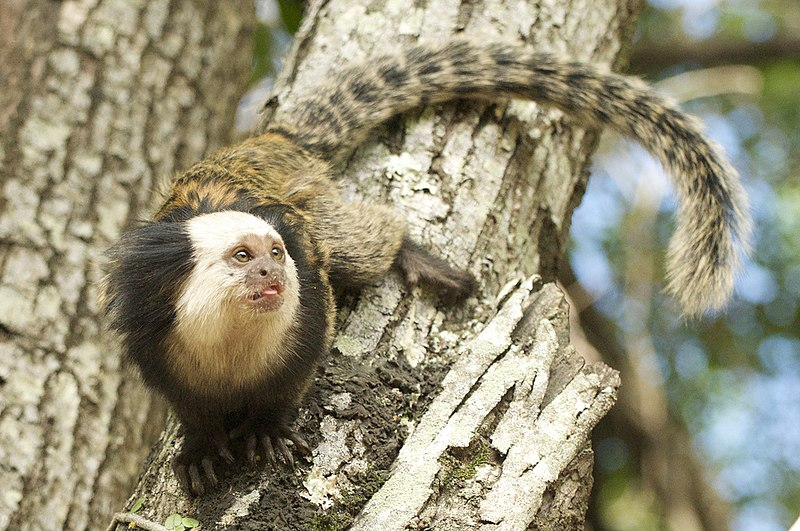

Como cuidar de um Macaquinho Sagui

Segundo Tiago Calil Ambiel, biólogo da Educação Corporativa Cobasi, se forem manejados corretamente, os macacos saguis
podem viver até 15 anos ao lado do tutor e se tornar bons companheiros, mansos e carinhosos. Mas Tiago faz um alerta:
“Se não há contato, podem estranhar, se tornar agressivos e até morder; portanto, cuidado”.
Para que um macaco de estimação viva feliz e saudável, é preciso criar um ambiente que seja o mais semelhante possível ao que ele encontraria na natureza. O viveiro não pode ser pequeno – pelo contrário, deve ser bem amplo, com galhos grandes distribuídos em todo o espaço, imitando a distribuição das árvores na natureza. Isso é muito importante, pois os macacos são exímios saltadores e precisam de espaço para exercitar esses movimentos.
É necessário colocar brinquedos de madeira e tocas nas partes altas do viveiro para que o macaco de estimação possa se manter ativo. Tiago Calil afirma, ainda, que é muito importante ocupar a maior parte do tempo desses animais, pois a falta de estímulos do ambiente pode levar o macaco a desenvolver depressão, o que o deixa mais suscetível a outras doenças.
Para que um macaco de estimação viva feliz e saudável, é preciso criar um ambiente que seja o mais semelhante possível ao que ele encontraria na natureza. O viveiro não pode ser pequeno – pelo contrário, deve ser bem amplo, com galhos grandes distribuídos em todo o espaço, imitando a distribuição das árvores na natureza. Isso é muito importante, pois os macacos são exímios saltadores e precisam de espaço para exercitar esses movimentos.
É necessário colocar brinquedos de madeira e tocas nas partes altas do viveiro para que o macaco de estimação possa se manter ativo. Tiago Calil afirma, ainda, que é muito importante ocupar a maior parte do tempo desses animais, pois a falta de estímulos do ambiente pode levar o macaco a desenvolver depressão, o que o deixa mais suscetível a outras doenças.
Alimentação dos macaquinhos Sagui

A alimentação dos saguis consiste em frutos, exsudatos, insetos e pequenos vertebrados. Eventualmente podem
ingerir algumas folhas jovens, mas vai depender do que tem disponível na região em que estão habitando.
A média percentual de sua alimentação fica divida assim: 45% para exsudatos, 35% para frutos, 15% para material
animal e 5% para outros. Ocorrendo assim, uma alta ingestão de vitaminas e minerais, inclusive importantes oligoelementos.
Essa ampla variedade é simplificada quando são transferidos para o cativeiro.
A escolha dos alimentos é muito importante. Hoje, temos disponíveis algumas marcas que fabricam rações próprias para alimentação dos saguis. Uma dica: verifique na embalagem da ração a quantidade necessária pra cada idade do animal e peso. Sempre ofereça a ração juntamente com algum outro tipo de alimento, como frutas, verduras, legumes e ovos cozidos, larvas de camarão, tenébrios e até grilos. Varie as frutas e verduras para que ele se acostume, e assim consiga absorver todos os nutrientes necessários. A dieta em cativeiro pode ser bem parecida com a de vida livre, tomando os devidos cuidados em relação à quantidade e variedade.
A escolha dos alimentos é muito importante. Hoje, temos disponíveis algumas marcas que fabricam rações próprias para alimentação dos saguis. Uma dica: verifique na embalagem da ração a quantidade necessária pra cada idade do animal e peso. Sempre ofereça a ração juntamente com algum outro tipo de alimento, como frutas, verduras, legumes e ovos cozidos, larvas de camarão, tenébrios e até grilos. Varie as frutas e verduras para que ele se acostume, e assim consiga absorver todos os nutrientes necessários. A dieta em cativeiro pode ser bem parecida com a de vida livre, tomando os devidos cuidados em relação à quantidade e variedade.